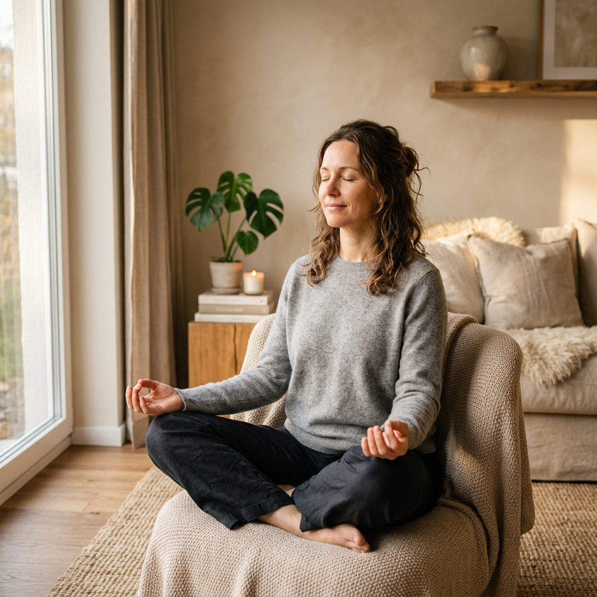
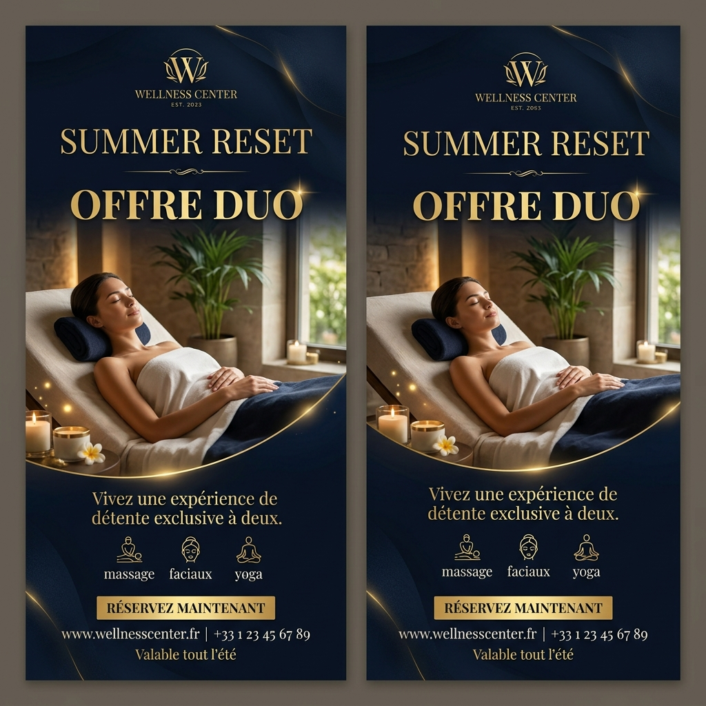
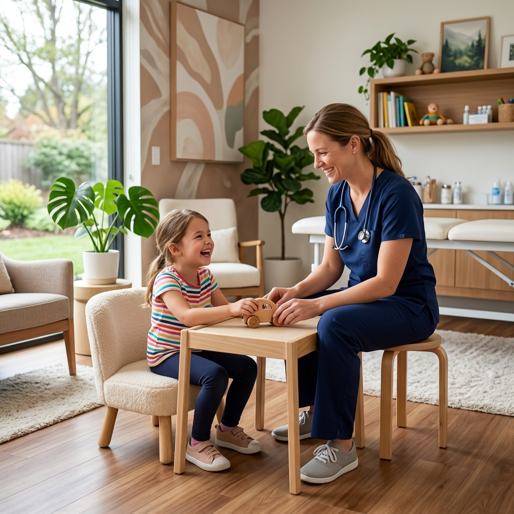

Des solutions ciblées, humaines et progressives Un accompagnement calibré pour chaque parcours de vie
Parce que chaque cerveau a son rythme. À l'International Neurofeedback Center, nous ne proposons pas de simples séances isolées. Nous construisons des parcours d'accompagnement pensés autour de besoins réels : stress, sommeil, attention, surcharge mentale, hypersensibilité, récupération, performance ou équilibre émotionnel.
Chaque parcours associe neurofeedback dynamique, écoute clinique, accompagnement psychologique et suivi progressif.
Deux manières d'être accompagné
Des parcours signature ou un accompagnement à la carte
Les parcours signature
Conçus autour d'un besoin précis (sommeil, anxiété, attention, hypersensibilité, performance, burnout, enfant ou équilibre féminin). Un accompagnement structuré, avec une intention claire et un suivi adapté.
L'accompagnement à la carte
Nos packs de 10 ou 20 séances, plus libres, pour avancer selon l'évolution de la personne. Chaque pack comprend les séances, les contrôles, la cartographie cérébrale (qEEG) et la consultation psychologique.
Nos parcours signature
Chaque parcours INFC a été pensé pour répondre à une problématique concrète, sans promesse médicale, sans diagnostic automatique et sans résultat standardisé. Nous accompagnons une personne, pas seulement un symptôme.
Brain Boost™ Optimisation Cognitive
Pour améliorer la clarté mentale, la concentration, l'organisation intérieure et l'endurance cognitive. Conçu pour les étudiants, entrepreneurs, dirigeants, cadres, sportifs, artistes, ou personnes mentalement dispersées.
Calm Reset™ Stress & Anxiété
Pour réguler la tension intérieure, l'anxiété persistante, l'hyperactivité mentale, et la difficulté à se détendre. Idéal pour l'impression d'un cerveau qui ne s'arrête jamais.

Sleep Reset™ Sommeil & Récupération
Pour surmonter les difficultés d'endormissement, les réveils nocturnes, le sommeil léger, la fatigue au réveil et la fatigue nerveuse persistante.

NeuroKids™ Enfants & Adolescents
Pour accompagner l'attention, la concentration, la réduction de l'agitation, de l'impulsivité, la confiance en soi, l'organisation ou la régulation émotionnelle. Le parent est pleinement intégré au parcours.

NeuroSensible Adulte™ Hypersensibilité
Pour les personnes vite envahies par les émotions, les pensées, le bruit, les environnements chargés — profils hypersensibles, neuroatypiques ou très réactifs.
Burnout Reset™ Épuisement & Surcharge
Pour remédier à la fatigue avancée, la perte d'élan, la saturation, l'irritabilité, et la difficulté à récupérer malgré le repos, sous pression prolongée.

Femme Harmony™ Équilibre Féminin
Pour soulager la fatigue, la charge mentale, les variations émotionnelles, et accompagner les transitions hormonales, la grossesse, le post-partum ou un changement de rythme de vie. * En cas de grossesse à risque, de suivi médical spécifique ou de situation particulière, l'avis du médecin reste recommandé.

Un parcours structuré, du premier échange au suivi
Chaque accompagnement INFC peut inclure, selon le besoin :
La cartographie cérébrale (qEEG)
Mesurer pour mieux comprendre
La cartographie (qEEG) peut être proposée dans certains parcours afin de mieux comprendre le fonctionnement cérébral et d'orienter l'accompagnement. Ce n'est pas un diagnostic médical, elle ne prédit pas un résultat et ne remplace pas une consultation spécialisée : c'est un outil de compréhension et de suivi.
Comment choisir le bon parcours ?
Il n'est pas toujours évident d'identifier le parcours le plus adapté. Certaines personnes viennent pour le stress, mais découvrent que le sommeil est au cœur du problème ; d'autres pour leur enfant, sans savoir s'il faut travailler l'attention, l'anxiété ou la régulation émotionnelle. Lors du bilan découverte, notre équipe comprend votre situation et vous oriente vers le parcours le plus cohérent.
Faire le bilan d'orientationUne approche complémentaire
Le neurofeedback ne remplace pas un suivi médical
Le neurofeedback dynamique est un accompagnement non invasif d'autorégulation cérébrale. Il ne remplace pas un diagnostic médical, un traitement, une psychothérapie ou un suivi spécialisé lorsque ceux-ci sont nécessaires. Il peut s'inscrire en complément, dans le respect du cadre de chacun.
Questions fréquentes
Dois-je choisir mon parcours ?
Non. Vous venez avec une problématique générale ; l'équipe vous aide à identifier le parcours adapté.
Peut-on changer de parcours ?
Oui, selon l'évolution, les besoins et le ressenti.
Adaptés aux enfants ?
Oui, notamment le parcours NeuroKids™, mené en lien étroit avec les parents.
Les résultats sont-ils garantis ?
Non. Chaque cerveau répond à son rythme ; l'INFC ne promet pas un résultat identique pour tous.
Commencez dès aujourd'hui
Bénéficiez d'une première écoute attentive pour faire le point sur vos objectifs de bien-être cérébral et cognitif.